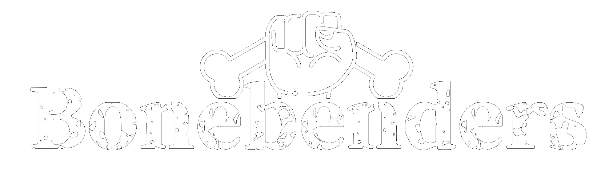

Chirurgia rigenerativa
L'osso guarisce.
RIGENERA
Evidence-based. Non promesse.
Perché fidarsi
Clinica, non pubblicità.
30+
anni in chirurgia orale
4
aree di specializzazione
Di cosa mi occupo
01
Parodontologia
Rigenerazione del tessuto di sostegno
02
Implantologia
Stabilità primaria, osteointegrazione
03
Chirurgia orale
Rialzo del seno, innesti, G B R
Studio Denti Più · Frosinone
Scrivimi.
Rispondo io, personalmente.
WhatsApp 0775 889009
→